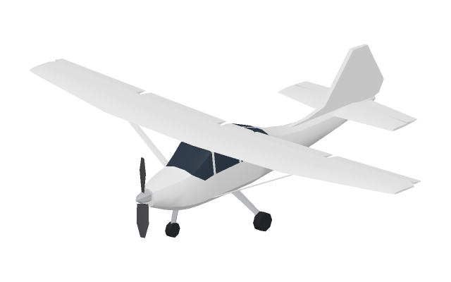
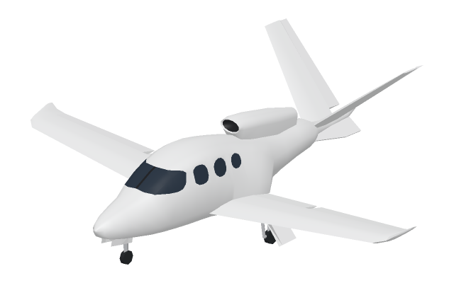
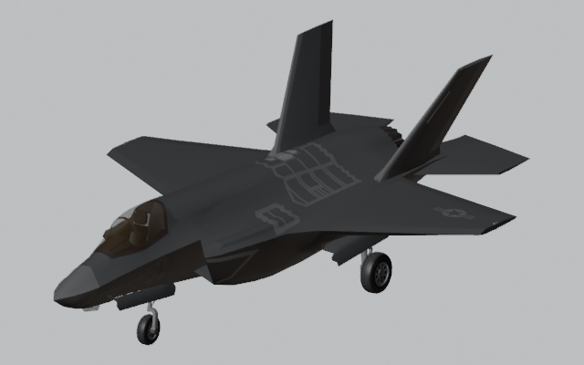

Your choice of scenery. Free raster basemaps and streamed elevation work without a Google key. Google Photorealistic 3D Tiles needs your own API key; coverage, billing and provider terms apply.
Choose your aircraft
Three ways to spread your wings.
From a high-wing trainer to an experimental fighter. Choose in the simulator’s Aircraft tab.

Cessna 172 Skyhawk
Cessna 172 Skyhawk
High-wing trainer. Flight model and visuals both available.

Cirrus Vision Jet
Cirrus Vision Jet
Single-engine personal jet. G1, G2, G2+ and G3 variants.
G1, G2 and G3 have separate runtime packages. G2+ is currently mapped to the G2 runtime while separate physics/package support is not yet implemented. Choosing a generation does not provide calibrated generation-specific performance, a new cabin or complete generation-specific avionics.

Lockheed Martin F-35B Lightning II
Experimental
Lockheed Martin F-35B Lightning II
STOVL fighter. Experimental flight model and AF267 exterior model.
Experimental F-16/Aeromatic-derived JSBSim flight model. F-35B performance and STOVL behavior are not validated.
Your first flight starts in the Cessna 172. Open ? for aircraft details and current limits.
Pick an airport. Set the wind. Make it your flight.
Keyboard & controller +
Default keyboard
Input
Action
W / S
Pitch
A / D
Roll
Q / E
Yaw / rudder
Shift / Control
Increase / decrease throttle
F / R
Extend / retract flaps
G
Raise / lower the landing gear
B
Brake
P
Pause
V
Toggle first- and third-person camera
Use the on-screen sliders for throttle and pitch trim. Rebind the keyboard or a controller in the Controls tab.
Pair your phone +
On the computer, open the simulator, then + → Remote Control. Scan the QR with your phone camera. The QR expires after two minutes and admits one phone.
The simulator is open source. Inspect the flight model, improve an aircraft, or help build what comes next. Scenery and third-party assets carry their own licences.